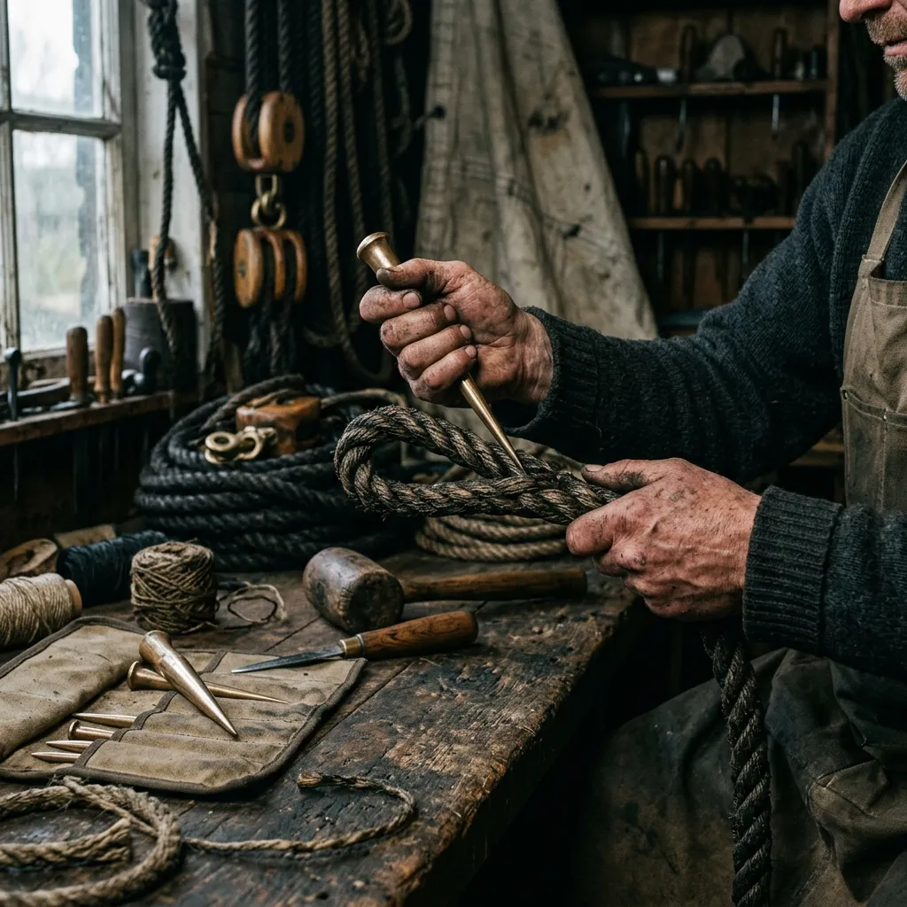

The Loft
Heritage craft in a converted smokehouse.
How Fenella came to the loft
Fenella Doak spent eleven years as a rigger at Portsmouth Naval Base, working on the standing rigging of HMS Warrior and, later, HMS Victory's mizzen refit. She left in 2010 after a winter spent replacing bonded polyester panels that had failed on a replica 1780s cutter, and returned to Bute — where her grandfather had been a herring net-maker — with a plan to cut sails the way they had been cut before nylon. The smokehouse on Barone Road had been derelict since 1978. She bought it for £14,200, laid a 24-metre chalking floor across the ground level, and cut her first mainsail (a 26-foot gunter for a Loch Fyne skiff) in April 2011. The loft now employs four stitchers, one apprentice on a three-year indenture, and a black cat called Ballast.
Trained hands.
A sail cannot be trusted if the hands that cut it have not been properly taught. We do not rely on weekend courses or hobbyist enthusiasm. Every full-time stitcher at Halyard & Hemp has completed a rigorous three-year indentured apprenticeship upon the chalking floor, learning the precise tension required to flat-fell a heavy flax seam.
We insist that our staff hold a City & Guilds Level 3 in Marine Textiles as a baseline qualification. Our loft is a proud and active member of the Association of Traditional Boat Owners, ensuring our practices remain historically sound. Furthermore, our smokehouse workshop is inspected annually by the Wooden Boatbuilders' Trade Association to certify that our rigging methods and hardware standards meet the highest safety requirements for classic vessels.
Meet the loft →Three vessels, three sail plans.
Our work spans museum curation to hard coastal cruising. These three vessels represent the exact scope and scale of commissions undertaken upon our loft floor.
1908 Loch Fyne Skiff
Commissioned by the Scottish Fisheries Museum. We cut a powerful dipping lug sail from 16-oz Belgian flax, exactingly matched to the original 1912 drawings. Delivered in March just prior to the early sailing season.
1937 Bermudan Cutter
A privately owned classic yacht moored in Tarbert. We supplied a heavy 12-oz flax mainsail, retaining the Bermudan plan but replacing the tired Dacron with a period-correct cloth that sets beautifully. Delivered in June.
1770s Customs Cutter
A complete Full Wardrobe built for a replica vessel starring in a BBC period drama. Comprised a gaff main, square topsail, and flying jib in 12-oz canvas, entirely hand-roped for historical accuracy. Delivered in September.
Where we sail to.
While our sails draw wind across the world, our fitting process relies heavily on geography. For vessels requiring on-site fittings, we cover any harbour within a day's drive of Rothesay. This includes all marinas and moorings in Argyll, Ayrshire, Dunbartonshire, and greater Glasgow.
For the rest of the UK, our head cutter conducts scheduled measurement visits twice yearly — typically reaching the South Coast in October and the East Coast in February. For international commissions, we operate successfully by post, guiding owners through taking highly detailed chalk rubbings of their spars, supplemented by a thorough video call before the canvas is ordered.
Check your postcode →